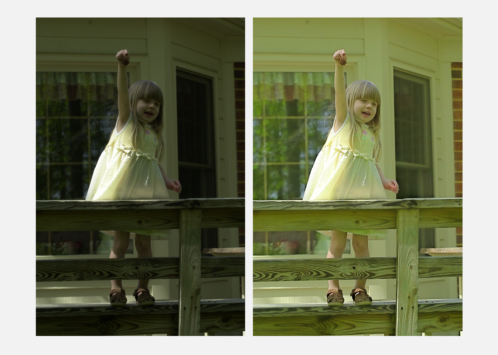
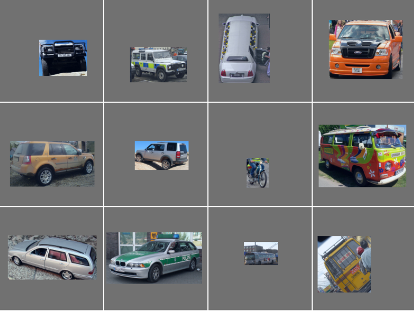
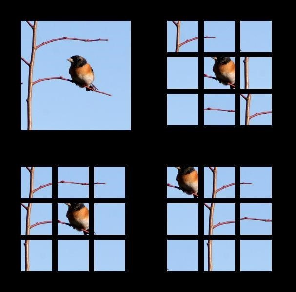

Xutong Ren (任旭彤)
Hi, I am Xutong Ren, a senior undergraduate student majoring in Computer Science at School of EECS, Peking University, Beijing, P.R.China. My research interets lie primarily in the area of Computer Vision and Deep Learning, specifically, neural style transfer, curriculum learning and self-supervised learning. I am planning to apply for Ph.D. in 2018 Fall. Please contact me if you are intereted. [CV]
Education
- Peking University (PKU)
2015 - 2019, The School of Electronics Engineering and Computer Science (EECS)
Bachelor of Science in Computer Science
Experiences
- Research Assistant
- Summer Intern
- Teaching Assistant
- Winter Visiting
Spatial and Temporal Restoration, Understanding and Compression Team (STRUCT)
Institute of Computer Science and Technology (ICST), Peking University
Advisor: Jiaying Liu, Associate Professor
Computational Cognition, Vision, and Learning research group (CCVL)
Center for Imaging Science (CIS), Johns Hopkins University
Advisor: Alan Yuille, Professor
Introduction to Computer Science, EECS, Peking University
Computer Science and Electrical Engineering Education Program, Massachusetts Institute of Technology
Publications
Research
Joint Enhancement and Denoising Method via Sequential Decomposition
-

In this work we solved the problem that low-light enhancement methods ignore intensive noise in original images which leads to simultaneously enhance the noise as well. A joint low-light enhancement and denoising strategy based on a novelsequential Retinex decomposition concept was proposed. Our method performs well for a wide variety of images, and achieves better quality compared with the state-of-the-art methods.
This work was done during my internship at ICST and is accepted by ISCAS2018.
J3LR: Joint Low-Light and Low-Rank Method

In this work we explained and demonstrated why solving the Retinex decomposition problem iteratively causes noise to distribute in each component, which in the end impairs the denoising ability. We are the first to combine low-light enhancement method and low-rank denoising approach in order to improve the quality of images. An integrated low-rank decomposition of three channels in RGB space is applied to remove noise from the reflectance map.
This work was done during my internship at ICST and is to submit to TIP.
Recurrent Curriculum Learning
-

In this work we proposed a new form of Curriculum Learning, which follows an organized learning order by gradually reducing oracle information given to the network. We designed a general two-stage network model, using outputs of coarse stage to replace oracle information given to fine stage and increase learning difficulty. After that, it is applied to different visual tasks such as object detection, segmentation and classification. This work was done during my summer visit to JHU and is still continues.
Transfer Learning via Jigsaw Puzzle
-

In this work we built a recurrent solution to a jigsaw puzzle of 9! different permutations in a self-supervised manner, without heavy burden of human annotation. By enforcing the neural network to learn from spatial contexts of puzzles, we were capable to transfer the learned features to visual tasks such as medical image analyses. This work was done during my summer visit to JHU and it is submitted to CVPR2019.
Activities
-
To appear soon
Awards
- Peking University Award for Academic Excellents (2018)
- Wang Shengdi Scholarship (2018, top 10%)
- Peking University Award for Academic Excellents (2017)
- 8108 College Scholarship (2017, top 10%)
- The Third Prize of Peking University ACM Competition (2017)
Contact
- Email: tonghelen AT pku.edu.com
- Github: tonghelen